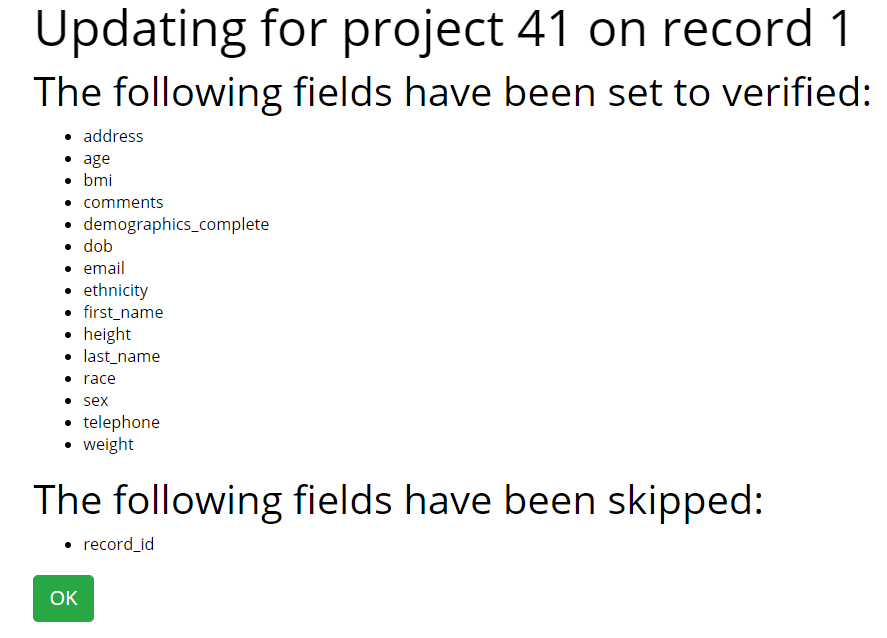

- Enable the module for your project.
- Make sure you have data resolution workflow enabled.
- Give users the necessary rights.
- The verify all button only shows for saved records.
- Records that have history (i.e. that have been deverified or that have a query) will be skipped.
If all the above conditions are met you should be able to see the 'Verify all' button.
If you don't understand why a user doesn't see the 'Verify all' button you can enable the debug button in the project settings of the module.
Once you've successfully verified all records you should see an overview of what fields are verified/skipped.
